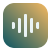
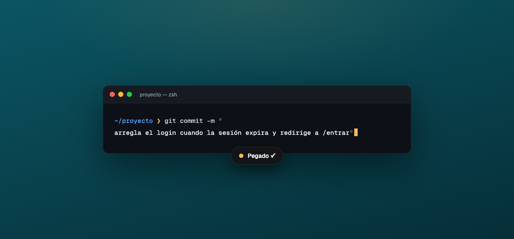
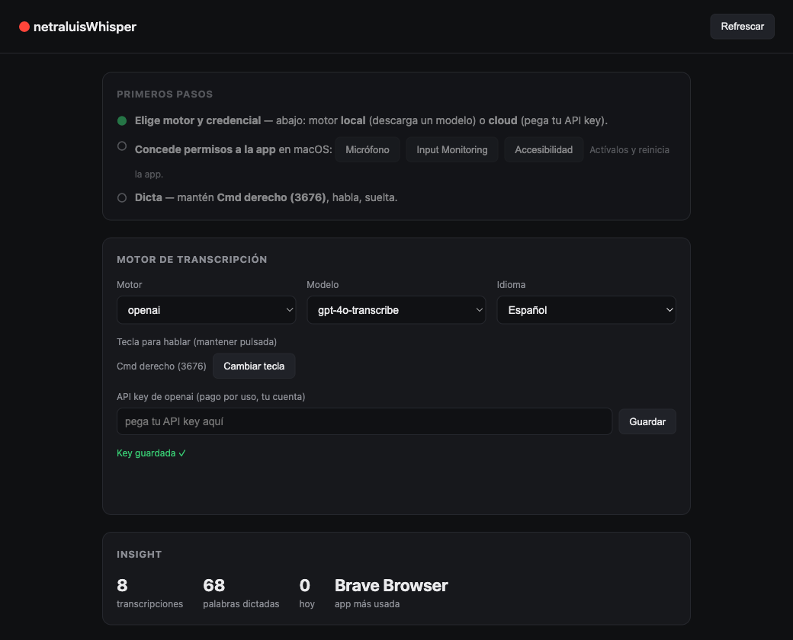

netraluis whisperLo hice para mí: dictar en el Mac sin que mi voz salga a ningún servidor. Mantienes una tecla, hablas —aunque sea susurrando—, sueltas, y se pega en la terminal, el editor, el navegador, donde estés. En local (gratis, offline) o con tu propia API si la prefieres.

El caso es que no siempre quieres depender de internet. Corre modelos Whisper abiertos en tu propio Mac (gratis, offline, con GPU), o usa una API cloud (Groq / OpenAI) con tu propia key si buscas otra cosa.
Mantienes la tecla, hablas bajito, sueltas. El texto sale limpio y se pega solo en la app que tengas delante. Sin ventana intermedia, sin copiar-pegar.
Si usas cloud, la key se guarda cifrada en el Keychain de macOS. Nada sale de tu equipo salvo al proveedor que tú elijas. En local, ni eso.
Cada dictado queda en local. Lo recuperas, lo vuelves a pegar, y ves en qué apps y cuánto has dictado. Los datos son tuyos y se quedan en tu Mac.

El panel de ajustes (se abre desde el menubar) es donde mandas tú:
.dmg, ábrelo y arrastra la app a Aplicaciones.
brew install --cask netraluis/tap/netraluiswhisperxattr -dr com.apple.quarantine /Applications/netraluisWhisper.app
brew uninstall --zap --cask netraluiswhisper
(el --zap borra también tus ajustes, historial, keys y modelos).
netraluisWhisper.app a la papelera y
rm -rf ~/Library/Application\ Support/netraluiswhisper para los datos.
Los permisos (Micrófono, Accesibilidad, Input Monitoring) los quitas en Ajustes → Privacidad.